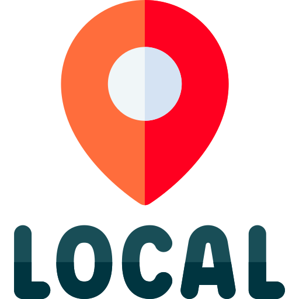
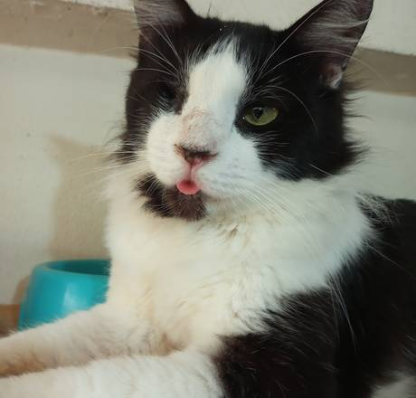

Patinhas
Seguras
Home
Doação
Veterinário
Itens doados
Denunciar
Login
Registro
Usuário
▼
⚙️ Configurações
üö™ Sair
Ver Cachorros
Ver Gatos
Idade
Meses
1 ano
2 anos
3 anos
4 anos
5 anos ou mais
Sexo
Macho
Fêmea
Porte
Pequeno
Médio
Grande
Raça
SRD
Pastor Alemão
Golden Retriever
Bulldog Francês
Poodle
Região
Sudeste
Nordeste
Sul
Buscar
Mike

São Paulo, SP
Pepita
Minas Gerais, MG
Bingo
São Paulo, SP
Tigresa
São Paulo, SP
Brutos
Rio de Janeiro, RJ
Negão
Fortaleza, Ceará
Baruk
São Paulo, SP
Bart
Rio de Janeiro, RJ
Apolo Marc
São Paulo, SP
Gorete
São Paulo, SP
Alfredo
Congonhal, MG
Arrascaeta
Fortaleza, Ceará
Idade
Meses
1 ano
2 anos
3 anos
4 anos ou mais
Sexo
Macho
Fêmea
Porte
Pequeno
Médio
Grande
Raça
SRD
Persa
Siamês
Angorá
Região
Sudeste
Nordeste
Sul
Buscar
Lola
São Paulo, SP
Gisele Bintchen
Minas Gerais, MG
Merlim
São Paulo, SP
Bob
Rio de Janeiro, RJ
Jean
Fortaleza, Ceará
Guinho
São Paulo, SP
Raj
Rio de Janeiro, RJ

Frajola
Rio de Janeiro, RJ
Jack
Fortaleza, Ceará
Izye
Itaquaquecetuba, SP
Filipa
São Paulo, SP
Chiquinha
Fortaleza, Ceará
×
Nome do Animal
Sexo:
Idade:
Porte:
Raça:
Localização:
História:
Quero Adotar!
+
×
Cadastrar Novo Animal
Espécie:
Cachorro
Gato
Nome:
Sexo:
Macho
Fêmea
Idade:
Porte:
Pequeno
Médio
Grande
Raça:
Localização:
História:
Foto:
Cadastrar Animal